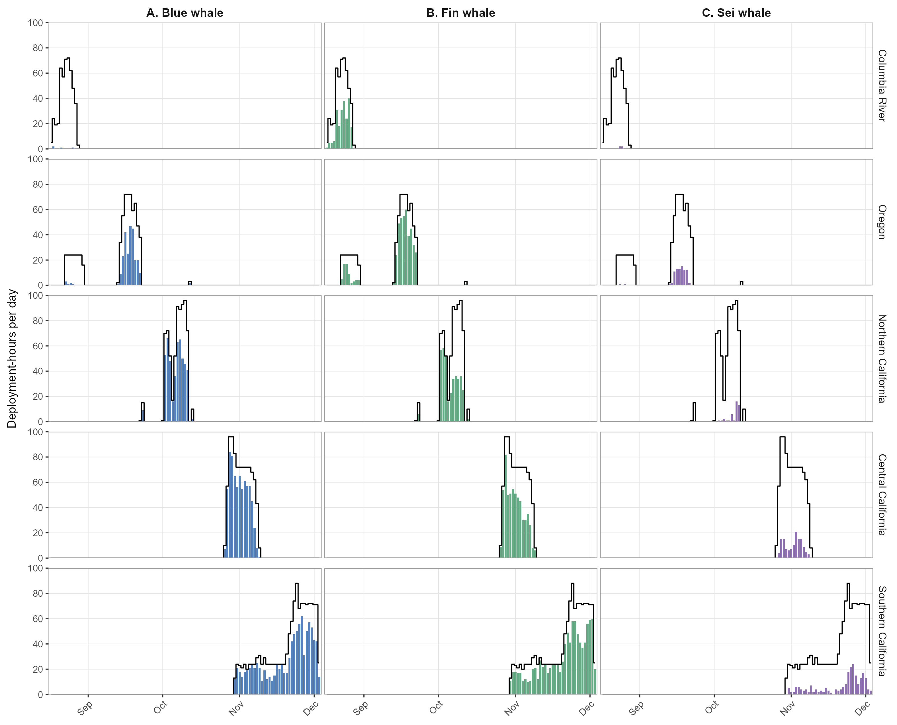
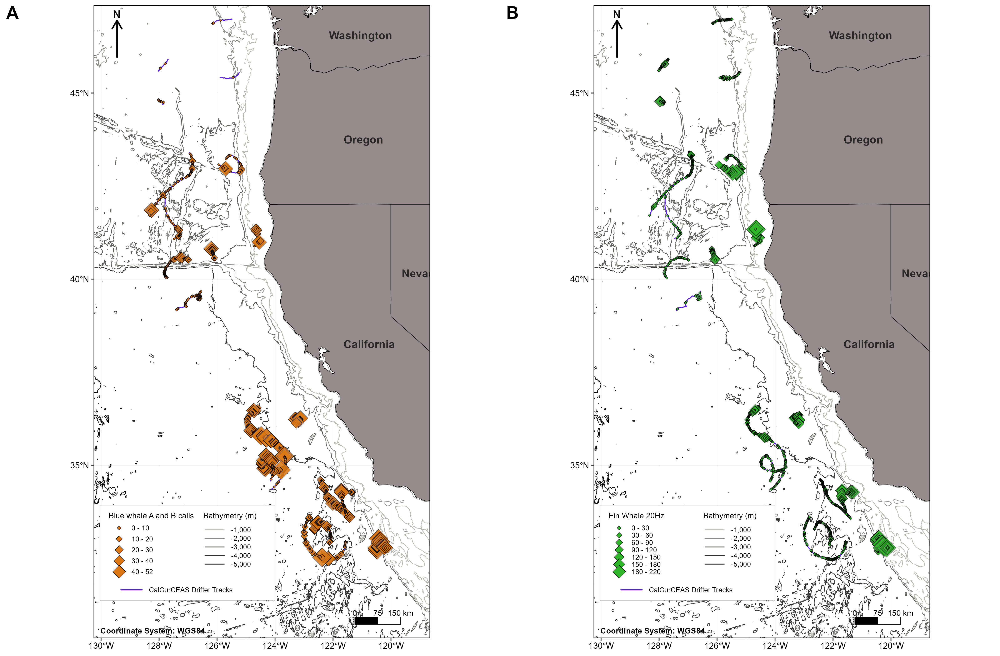
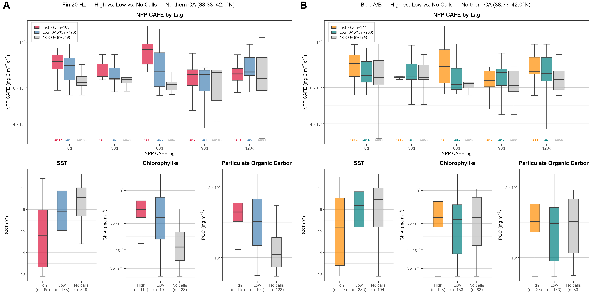

| Geographic zone | Validated hours | Blue whale positive hours, n (%) | Fin whale positive hours, n (%) | Sei whale positive hours, n (%) |
|---|---|---|---|---|
| Columbia River | 481 | 4 (0.8%) | 216 (44.9%) | 4 (0.8%) |
| Oregon | 703 | 251 (35.7%) | 447 (63.6%) | 83 (11.8%) |
| Northern California | 731 | 497 (68.0%) | 380 (52.0%) | 42 (5.7%) |
| Central California | 955 | 721 (75.5%) | 580 (60.7%) | 132 (13.8%) |
| Southern California | 1,396 | 974 (69.8%) | 1,010 (72.3%) | 225 (16.1%) |
| Total | 4,266 | 2,447 (57.4%) | 2,633 (61.7%) | 486 (11.4%) |
Baleen Whale Results
This page summarizes key results from the blue, fin, and sei whale analyses conducted using drifting acoustic recorder data collected during the 2024 California Current Cetacean and Ecosystem Assessment Survey (CalCurCEAS). Results are presented from two complementary analytical products: a manually validated hourly occurrence dataset used to characterize acoustic presence, and automated call-level detections used to examine relative acoustic activity for call types with sufficient detector performance.
Note
Hourly geographic-zone assignments were based on the drifting recorder’s position during each hour. Because CalCurCEAS sampling progressed generally from north to south between August and December 2024, differences among geographic zones represent combined spatial and temporal variation rather than seasonally standardized regional comparisons.
Validated hourly occurrence
After data-quality screening and conversion of usable recordings to complete clock-hour bins, the validated occurrence dataset contained 4,266 Validated Analysis Hours from 22 deployments. Blue whale vocalizations were confirmed during 2,447 hours (57.4%), fin whale vocalizations during 2,633 hours (61.7%), and sei whale vocalizations during 486 hours (11.4%). Blue whales were detected on 21 of 22 analyzed deployments, fin whales on 22 of 22, and calls attributed to sei whales on 19 of 22.
Blue whale occurrence was very low during Columbia River sampling and increased substantially during Oregon and California sampling, with the highest proportional hourly occurrence in Central California. Fin whale vocalizations were common throughout the survey and reached their highest proportional occurrence during Southern California sampling. Sei whale vocalizations were less frequent on an hourly basis but were detected across all five geographic zones and most analyzed deployments.

Call-type-specific and deployment-level timing is shown in the regional acoustic-scene figures archived in the _figs/BaleenWhales/ directory.
Detector performance on novel CalCurCEAS data
The final DeepAcoustics Network 17, 400-Hz TinyYOLO detector was evaluated using a stratified 20% manual review of novel CalCurCEAS recordings. Precision, recall, and F1-score were calculated from pooled true-positive, false-positive, and false-negative counts across novel deployments.
A pooled F1-score of at least 0.80 was used as the criterion for retaining call classes for unreviewed automated call-level analyses. This criterion retained Blue whale A, Blue whale B, and Fin whale 20 Hz. Blue whale D, Fin whale 40 Hz, and Sei whale downsweep remained available in the manually validated hourly occurrence dataset but were not used for quantitative analyses of unreviewed automated call counts.
| Call type | Precision | Recall | F1-score | Automated call-level analysis |
|---|---|---|---|---|
| Blue whale A | 0.996 | 0.946 | 0.970 | Retained |
| Blue whale B | 0.988 | 0.675 | 0.802 | Retained |
| Blue whale D | 0.963 | 0.587 | 0.729 | Not retained |
| Fin whale 20 Hz | 0.973 | 0.749 | 0.846 | Retained |
| Fin whale 40 Hz | 0.583 | 0.061 | 0.110 | Not retained |
| Sei whale downsweep | 0.864 | 0.481 | 0.618 | Not retained |
Deployment-level performance results and the pooled performance dataset are available with the baleen whale supplementary products, and the reproducible evaluation workflow is in _code/baleen_whales/detector_performance/.
Relative automated call activity
Automated detections of the three retained call classes were summarized as a secondary index of relative acoustic activity. Across the 20 novel deployments included in this analysis, the detector identified 1,353 blue whale A calls, 15,874 blue whale B calls, and 45,529 fin whale 20 Hz calls over 4,030.6 hours of usable acoustic recording effort.
Effort-normalized detection rates varied among geographic zones within each call type. Blue whale A and B rates were lowest in the northern portion of the survey and higher during California sampling. Fin whale 20 Hz activity was present throughout the study area and had its highest regional detection rate during Southern California sampling.
| Geographic zone | Usable recordings (h) | Blue A detections/h | Blue B detections/h | Fin 20 Hz detections/h |
|---|---|---|---|---|
| Columbia River | 483.3 | 0.00 | 0.02 | 3.77 |
| Oregon | 536.2 | 0.01 | 1.25 | 9.12 |
| Northern California | 656.5 | 0.12 | 3.50 | 10.12 |
| Central California | 955.5 | 0.46 | 5.99 | 10.13 |
| Southern California | 1,399.1 | 0.59 | 5.13 | 16.08 |
| Total | 4,030.6 | 0.34 | 3.94 | 11.30 |

Important
Automated detection rates are indices of relative acoustic activity within call type. They should not be interpreted as whale abundance, whale density, or directly compared among call types because call production, detectability, and detector performance differ among classes.
Environmental context
Environmental comparisons were exploratory and were used to place variation in automated call activity in oceanographic context. The finalized environmental dataset contains 4,025 hourly bins from 20 novel deployments. For blue whale A/B and fin whale 20 Hz activity, hours were classified separately within each California geographic zone as high-call, low-call, or no-call using the zone-specific 75th percentile of hourly call counts.
Across pooled comparisons, call-positive hours generally occurred in deeper and cooler waters and under higher chlorophyll-a and particulate organic carbon conditions than hours with no retained detections. Fin whale 20 Hz activity showed the clearest environmental separation, including relatively high activity under cooler conditions and elevated chlorophyll-a and particulate organic carbon in Northern California. Blue whale A/B patterns were weaker and less consistent. Net primary productivity (NPP CAFE) was also examined at concurrent and nominal 30-, 60-, 90-, and 120-day lags, but no single lag consistently separated higher and lower call activity across species or geographic zones.

These relationships are descriptive. Survey location, season, deployment identity, environmental conditions, and acoustic activity varied concurrently, so the observed patterns are not interpreted as evidence of habitat preference or causal environmental drivers.
Additional environmental summaries, the Central and Southern California boxplots, and the selected Southern California four-panel spatial context figure are available in _figs/BaleenWhales/ and the environmental analysis workflow.
Data products
The public-facing baleen whale products are maintained in supplement/BaleenWhales/. The principal reusable products are:
| Product | Description |
|---|---|
CalCurCEAS_baleen_validated_hourly_presence_absence.csv |
Final manually validated hourly presence/absence dataset for blue, fin, and sei whale call types and species-level occurrence. |
CalCurCEAS_baleen_retained_automated_hourly_call_activity.csv |
Final hourly automated call-activity dataset for Blue A, Blue B, and Fin 20 Hz, including exact usable acoustic effort. |
CalCurCEAS_baleen_environmental_hourly.csv |
Hourly call-activity and environmental dataset used for the exploratory environmental analyses. |
CalCurCEAS_DeepAcoustics_performance_pooled_by_calltype.csv |
Pooled detector-performance metrics by focal call type. |
CalCurCEAS_DeepAcoustics_performance_by_deployment_calltype.csv |
Deployment-level TP, FP, FN, precision, recall, and F1 results for novel recordings. |
CalCurCEAS_environmental_summary_by_zone_activity.csv |
Regional environmental summaries by call metric and high-, low-, and no-call activity category. |
CalCurCEAS_PacificLF_TinyYOLO_final.mat |
Final Network 17, 400-Hz TinyYOLO detector used for the CalCurCEAS low-frequency baleen whale analysis. |
CalCurCEAS_PacificLF_TinyYOLO_final_README.md |
Detector documentation, including training provenance, software requirements, detection threshold, and performance limitations. |
Reproducible scripts and workflow documentation are organized under _code/baleen_whales/. Final rendered figures are archived under _figs/BaleenWhales/.